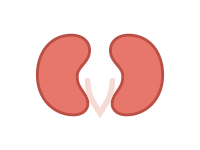
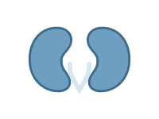
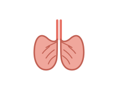
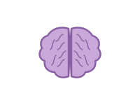

<!-- ============================================================
     Ren-Nu Hero-Section
     Eigenständiger Block: einfach in ein Custom-HTML-Block bei
     WordPress einfügen. Schriften werden von Google Fonts geladen.
     ============================================================ -->
<section class="rn-hero">
  <div class="rn-inner">
    <h1 class="rn-headline">Ren-Nu: your roadmap to metabolic health.</h1>

    <div class="rn-cards">
      <article class="rn-card rn-card--pkd">
        
        <p class="rn-card-label">For PKD</p>
        <a class="rn-btn" href="ren-nu-sales-funnel.html">Join Now</a>
      </article>

      <article class="rn-card rn-card--ckd">
        
        <p class="rn-card-label">For CKD</p>
        <button type="button" class="rn-btn">Join Waitlist</button>
      </article>

      <article class="rn-card rn-card--covid">
        
        <p class="rn-card-label">For Long COVID</p>
        <button type="button" class="rn-btn">Join Waitlist</button>
      </article>

      <article class="rn-card rn-card--mental">
        
        <p class="rn-card-label">For Mental Health</p>
        <button type="button" class="rn-btn">Join Waitlist</button>
      </article>
    </div>
  </div>
</section>

<style>
  .rn-hero {
    --rn-bg: #F7F1E6;
    --rn-ink: #1B3A36;
    --rn-leaf: #6E8B6A;
    --rn-leaf-soft: #A9C0A0;
    --rn-sun: #F3C98A;
    --rn-hill-1: #A9C4BE;
    --rn-hill-2: #7FA79E;
    --rn-brand: #1F5E52;
    --rn-brand-accent: #E1785B;

    --rn-pkd-bg: #F6D9CE;
    --rn-pkd-icon: #D9694B;
    --rn-pkd-btn: #D9694B;

    --rn-ckd-bg: #DCE9EA;
    --rn-ckd-icon: #3E7078;
    --rn-ckd-btn: #2E5960;

    --rn-covid-bg: #F6E3C2;
    --rn-covid-icon: #C98A2E;
    --rn-covid-btn: #C98A2E;

    --rn-mental-bg: #E7DEF2;
    --rn-mental-icon: #7C5FA6;
    --rn-mental-btn: #7C5FA6;

    position: relative;
    overflow: hidden;
    background: var(--rn-bg) url("../Images/landing_page_center_free.png") center / cover no-repeat;
    aspect-ratio: 3 / 2;
    color: var(--rn-ink);
    font-family: "Work Sans", system-ui, sans-serif;
    border-radius: 28px;
  }

  .rn-hero * {
    box-sizing: border-box;
  }

  /* Logo und Headline sind Teil des Hintergrundbilds */
  .rn-headline {
    position: absolute;
    width: 1px;
    height: 1px;
    overflow: hidden;
    clip: rect(0 0 0 0);
    white-space: nowrap;
  }

  .rn-inner {
    position: absolute;
    top: 54%;
    left: 17%;
    right: 17%;
  }

  .rn-cards {
    display: grid;
    grid-template-columns: repeat(4, 1fr);
    gap: 1rem;
  }

  .rn-card {
    border-radius: 18px;
    padding: 1.75rem 1rem 1.5rem;
    display: flex;
    flex-direction: column;
    align-items: center;
    gap: 0.9rem;
  }

  .rn-icon {
    width: 276px;
    max-width: 100%;
    height: auto;
    mix-blend-mode: multiply;
  }

  .rn-card-label {
    font-weight: 600;
    font-size: 1.05rem;
    margin: 0;
  }

  .rn-btn {
    display: inline-block;
    text-decoration: none;
    border: none;
    border-radius: 999px;
    padding: 0.6rem 1.3rem;
    font-family: inherit;
    font-weight: 600;
    font-size: 0.9rem;
    color: #fff;
    cursor: pointer;
    transition: filter 0.15s ease;
  }

  .rn-btn:hover {
    filter: brightness(1.08);
  }

  .rn-btn:focus-visible {
    outline: 3px solid var(--rn-ink);
    outline-offset: 2px;
  }

  .rn-card--pkd {
    background: var(--rn-pkd-bg);
  }

  .rn-card--pkd {
    --rn-icon: var(--rn-pkd-icon);
  }

  .rn-card--ckd {
    --rn-icon: var(--rn-ckd-icon);
  }

  .rn-card--covid {
    --rn-icon: var(--rn-covid-icon);
  }

  .rn-card--mental {
    --rn-icon: var(--rn-mental-icon);
  }

  .rn-card--pkd .rn-btn {
    background: var(--rn-pkd-btn);
  }

  .rn-card--ckd {
    background: var(--rn-ckd-bg);
  }

  .rn-card--ckd .rn-btn {
    background: var(--rn-ckd-btn);
  }

  .rn-card--covid {
    background: var(--rn-covid-bg);
  }

  .rn-card--covid .rn-btn {
    background: var(--rn-covid-btn);
  }

  .rn-card--mental {
    background: var(--rn-mental-bg);
  }

  .rn-card--mental .rn-btn {
    background: var(--rn-mental-btn);
  }

  @media (max-width: 780px) {
    .rn-hero {
      aspect-ratio: auto;
      padding: 62vw 1rem 2rem;
      background-position: top center;
      background-size: 100% auto;
    }

    .rn-inner {
      position: relative;
      top: auto;
      left: auto;
      right: auto;
    }

    .rn-cards {
      grid-template-columns: repeat(2, 1fr);
    }
  }

  @media (max-width: 480px) {
    .rn-cards {
      grid-template-columns: 1fr;
    }
  }
</style>

<link rel="preconnect" href="https://fonts.googleapis.com">
<link href="https://fonts.googleapis.com/css2?family=Lora:wght@500;600&family=Work+Sans:wght@400;500;600&display=swap"
  rel="stylesheet">